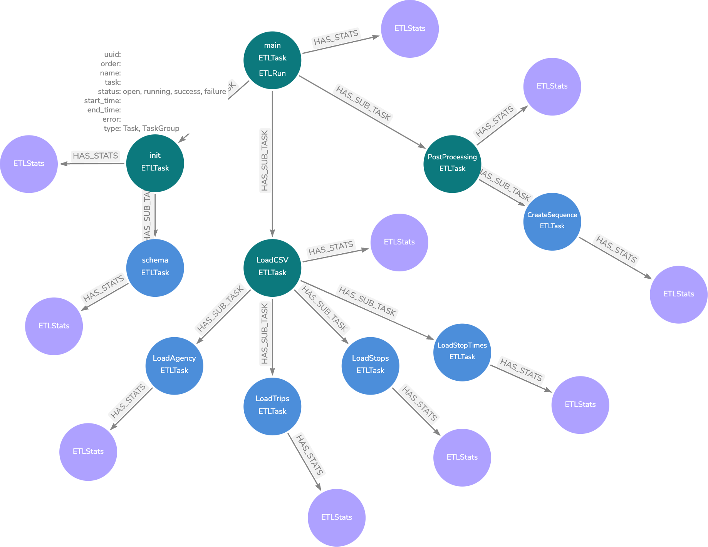

Reporting
The library comes with two implementations for reporting.
Basic Reporter
The ProgressReporter implements basic reporting using the Python logging package. Logging is done at the INFO level.
The setup_logging() function is provided to configure logging to both the console and an optional file.
The reporter is instantiated and configured inside the ETLContext constructor and can be retrieved from there.
As part of the ETL pipeline setup, a call to register_tasks() must be made, passing in the root of the task tree:
context.reporter.register_tasks(all_group)
This will log a tree representation of the tasks:
2025-02-09 13:33:42,696 - INFO -
└──main
├──schema-init
│ └──SchemaTask
├──csv-loading
│ ├──LoadAgenciesTask('mdb-2333-202412230030/agency.txt')
│ ├──LoadRoutesTask('mdb-2333-202412230030/routes.txt')
│ ├──LoadStopsTask('mdb-2333-202412230030/stops.txt')
│ ├──LoadTripsTask('mdb-2333-202412230030/trips.txt')
│ ├──LoadCalendarTask('mdb-2333-202412230030/calendar.txt')
│ └──LoadStopTimesTask('mdb-2333-202412230030/stop_times.txt')
└──post-processing
└──CreateSequenceTask
The Task is responsible for informing the reporter (from the context) about status changes, such as task start and completion. This occurs before and after calls to run_internal(), ensuring that task implementations do not need to handle this manually.
At the end of each Task, the reporter logs summary messages such as:
2025-02-09 13:43:41,535 - INFO - finished LoadStopTimesTask('mdb-2333-202412230030/stop_times.txt') in 0:01:03.138719 with success: True
+--------------+------------------+------------------+----------------+-------------------------+-----------------+
| valid_rows | csv_lines_read | properties_set | labels_added | relationships_created | nodes_created |
|--------------+------------------+------------------+----------------+-------------------------+-----------------|
| 1898816 | 1898816 | 3394080 | 678816 | 1357632 | 678816 |
+--------------+------------------+------------------+----------------+-------------------------+-----------------+
To maintain readability, only summary information with non-zero values is reported.
Neo4j Reporter
The Neo4jProgressReporter extends the basic ProgressReporter, allowing each ETL pipeline run to be persisted in a Neo4j database.
Which implementation is used depends on the existence of the key REPORTER_DATABASE in context.env. This env dictionary should be built from the process environment.
If the REPORTER_DATABASE key exists, its value determines the database where ETL status information is stored, enabling separation between application data and ETL metadata.
Each ETL run creates an independent subgraph. The following diagram illustrates the structure of such a subgraph for a GTFS example:
Green nodes represent Task, while blue nodes represent TaskGroup.
ETLStats nodes are created upon task completion and store summary information. For tasks with child tasks, the ETLStats node aggregates data from all children. To view the overall summary for a pipeline run, refer to the ETLStats node attached to the ETLRun node.
Unlike the Basic Reporter, which only logs non-zero values, ETLStats nodes store all summary data, including zero values.
The project’s root directory includes a dashboard.json file for use with Neodash Dashboard Builder.
Attention
The Neo4j reporter does not automatically create constraints for metadata. To manually create the constraint, execute the following Cypher query:
CREATE CONSTRAINT IF NOT EXISTS FOR (n:ETLTask)
REQUIRE n.uuid IS UNIQUE
Alternatively, the CreateReportingConstraintsTask can be added at the start of a pipeline to ensure the constraint is created if it does not exist.
Additionally, CLI provides details on using the command-line interface to query and manage ETL run history.